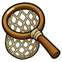
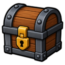

Fishing Net
Tool
| Property | Value |
|---|---|
| Tool for | 🎣 Fishing |
| Value | 5 coins |
| Stacks | No |
Sold at
| Shop | Zone | Price |
|---|---|---|
| 🧔 Ashvale General Store | 🌾 Ashvale | 10 coins |
Starter Chest
Every new character gets 1 in the 
Needed as a tool for
- 🎣 Net Shrimp